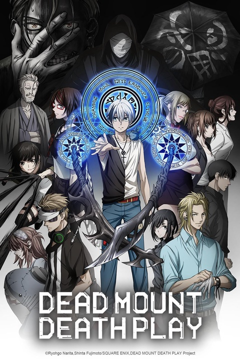

Subtitled ◆ Action, Adventure, Fantasy, Shonen
Sub | Dub ◆ Comedy, Drama, Romance
Comedy, Fantasy
Sub | Dub ◆ Comedy, Fantasy

Sub | Dub ◆ Comedy, Drama, Shonen
Most Popular
-
One Piece
Subtitled
-
JUJUTSU KAISEN
Sub | Dub
-
Hell's Paradise
Sub | Dub
-
MASHLE: MAGIC AND MUSCLES
Sub | Dub
-
Demon Slayer: Kimetsu no Yaiba
Sub | Dub
-

Dead Mount Death Play
Sub | Dub
Bungo Stray Dogs
Sub | Dub
Kicked out of his orphanage and on the verge of starving to death, Nakajima Atsushi meets some strange men. One of them, Dazai Osamu, is a suicidal man attempting to drown himself in broad daylight. The other, bespectacled Kunikida Doppo, nervously stands by flipping through a notepad. Both are members of the "Armed Detective Agency" said to solve incidents that even the military and police won't touch. Atsushi ends up accompanying them on a mission to eliminate a man-eating tiger that's been terrorizing the population...
Ranking of Kings
Sub | Dub
How prosperous your nation is, how many powerful warriors it boasts, and how heroic and strong its king is. These are the criteria that factor into the system known as the Ranking of Kings. The main character, Bojji, was born the first prince of the kingdom ruled by King Bossu, who is ranked number seven. But Bojji was born unable to hear and is so powerless that he can’t even swing a sword. In consequence, his own retainers and the public, look down upon him as completely unfit to be king. It is then that Bojji finds his first friend, Kage, and Bojji’s life takes a dramatic